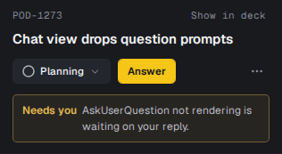
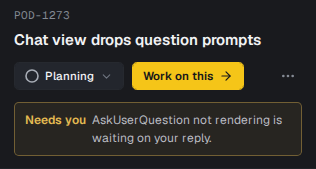
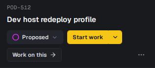
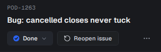
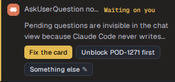
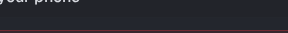
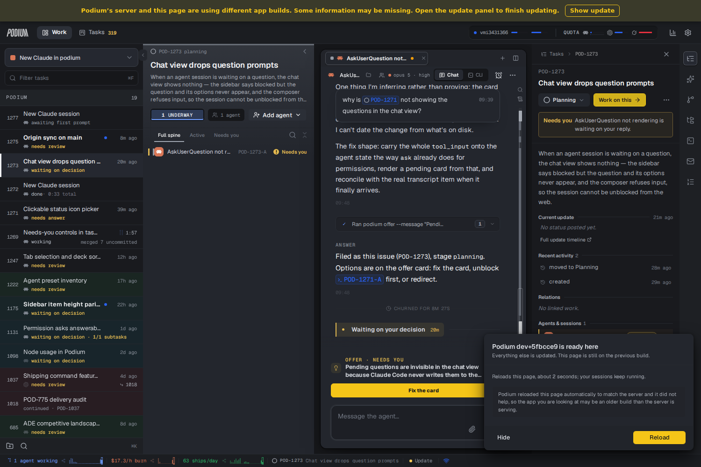
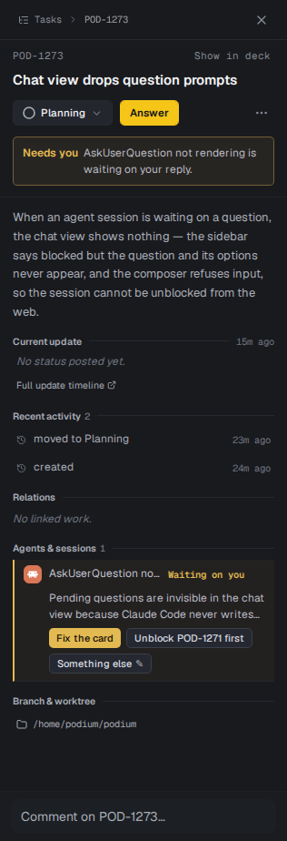
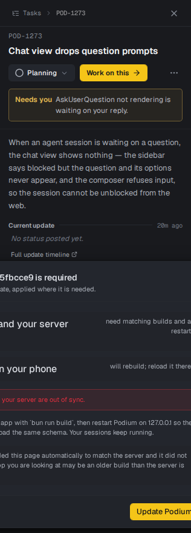

Needs-you controls in the task inspector
The same task (POD-1273, an agent waiting on a decision) photographed in the Tasks panel on main and on this branch. Same API, same data, two builds.
01The Answer button is gone
Three things said the same thing: the amber band named the decision, the waiting session wore an attention rule, and a filled yellow Answer button sat above both — which only navigated. The band still states the obligation; the answering happens in the conversation.


02"Show in deck" is now a Work on this button
Same destination it always had — the work tool, with the task selected in the sidebar and its agent open in the pane — promoted from an 11px grey link on the ref line to a button in the control strip. It appears only inside the explorer (the workspace dock is already there) and only while the task is still workable.


03The session roster raises a flag, not a card
Under "Agents & sessions" a waiting agent used to unfold its whole offer — headline, three buttons — inside a list whose job is to say who is on this task. Now it wears a badge; the offer is read and answered one click away, in the conversation.


04Where Work on this lands
Clicked from the explorer: the work tool, POD-1273 selected in the sidebar, its mission on the deck, and the waiting agent's conversation in the pane — with the offer's own buttons where they belong.

05The whole panel

